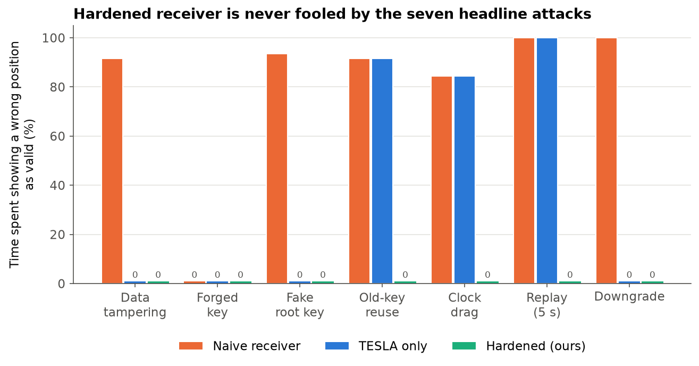
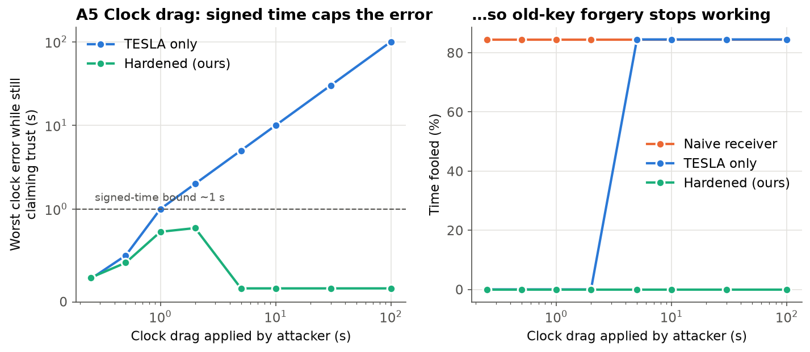
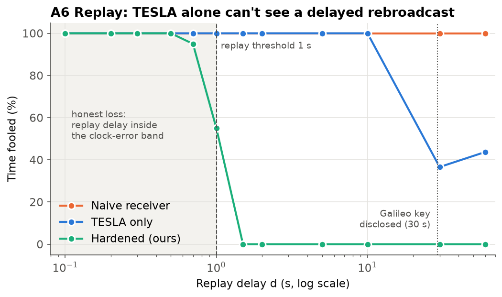

Two TESLA authentication schemes, signed internet time, and a replay check. Tested against eight attacks in simulation.
Anurag Rai · November 2026 · simulation only, no radio transmission
flights diverted to Jaipur in one night after airlines reported spoofed positions near IGI airport
interference and spoofing incidents in India's border regions, Nov 2023 to Feb 2025
DGCA's new deadline for reporting a spoofing event
Aviation, telecom network timing and AIS-140 fleet trackers all trust whatever position and time the satellite receiver reports.
Noise drowns the signal. The receiver knows it has no fix.
Forged signals with false data. The receiver shows a confident, wrong position.
Real signals recorded and rebroadcast late. Every bit is genuine, only the timing is wrong.
The contribution is the receiver: one trust policy across two constellations, a TESLA clock that can't be dragged, and a check for the replay attack TESLA can't see.
Broadcast authentication from multicast networking research. A cheap MAC now, the key disclosed later. Adopted by Galileo OSNMA and ISRO's NavIC proposal.
Weakness: secure only if the receiver knows the time well enough to reject a key that is already public.
Signed time from internet security. The client sends a random nonce; the server signs nonce + time + uncertainty with Ed25519.
Gives TESLA the trusted clock it assumes, from a source the radio attacker can't touch.
32-bit tag vs 512-bit Ed25519 signature per message: TESLA is 16× cheaper on a 25 bit/s channel. Parameters: ISRO ICG-17 (2023), L5/S chain.
Only satellites the trust policy marks authenticated reach the least-squares position solver.
Galileo (40-bit tags) and NavIC (32-bit) verified side by side. Position from authenticated satellites only, reported with a trust level.
Roughtime at cold start and every 30 s; a free-running oscillator flags any sudden clock jump.
MACs prove who wrote the data, not when it arrived. Flag signals whose time disagrees with signed time by more than 1 s.


A clock running 5 s slow (A4) or dragged by 5 s (A5) lets an attacker reuse already-disclosed keys. Signed time keeps the error under ~1 s, below what the forgery needs.

Detection is 0% at 0.3 s, 45% at 1 s, 100% from 1.5 s (40 seeds). Internet time is only good to about a second; closing the gap needs spreading-code authentication.
to verify one tag on a laptop (HMAC-SHA-256)
NavIC authentication bits per satellite (32-bit tag + 128-bit key every 48 s)
until NavIC satellites are authenticated, matching ISRO's figure. Galileo: 75 s warm, 102 s cold (median)
Open demo/demo.html (works offline), or run
make demo
for the same five steps in the terminal.
Code, tests, experiments and figures: one command each. make test · make experiments · make figures